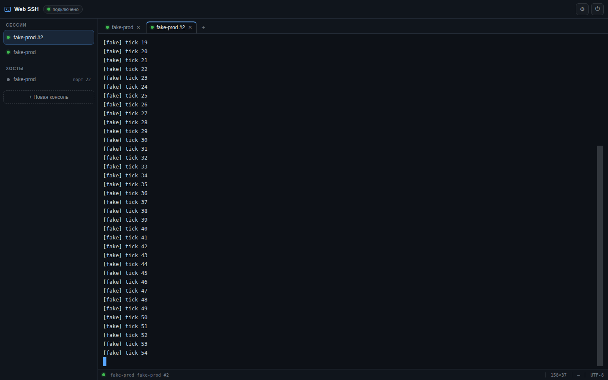
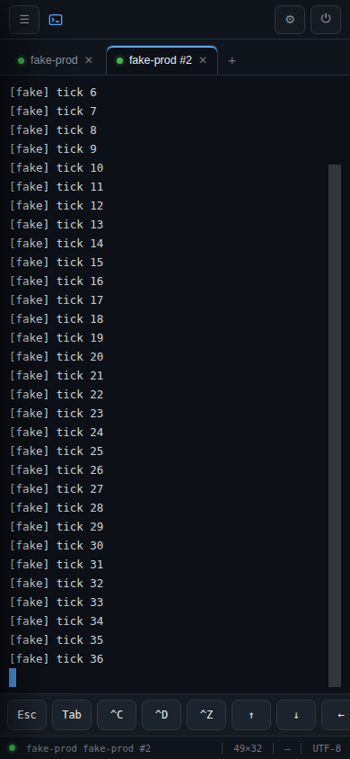

Снято с работающего сервиса в фейковом режиме (WEB_SSH_FAKE_SESSIONS=true), поэтому
в терминале [fake] tick N: это настоящий xterm через настоящий WebSocket и SQLite,
просто вместо SSH — эхо-транспорт. Две сессии к одному хосту, статус-бар показывает размер pty
и hist N — до какого чанка восстановлена история из БД.

